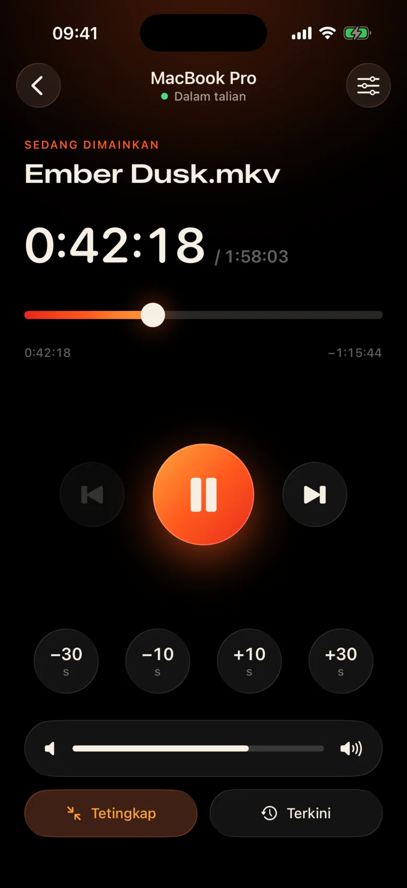
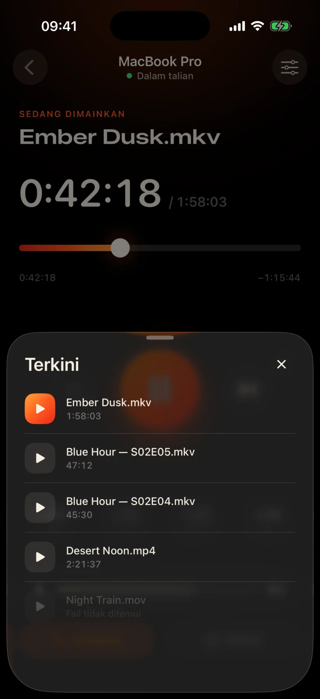
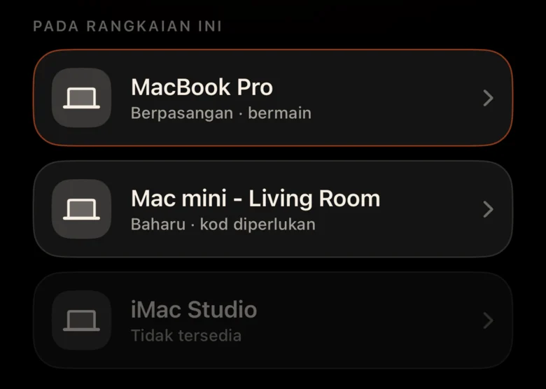
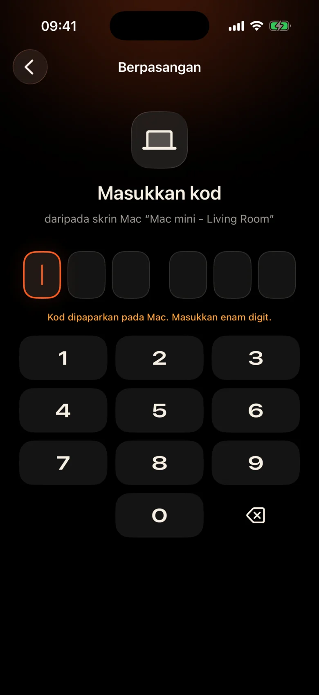

Mac berada di seberang bilik
Ia dipalamkan ke projektor di tepi dinding. Setiap jeda bermakna bangun, mencari pad jejak dalam gelap dan menjeling pada bar kawalan kecil.
Kinrox: ketik jeda pada telefon di tangan anda.
Kinrox memainkan mana-mana video pada Mac anda — dan menjadikan iPhone anda menjadi alat kawalan jauh. MacBook pada projektor, anda di atas sofa: jeda, lompat ke belakang 10 saat, kecilkan kelantangan atau mulakan episod seterusnya tanpa meninggalkan selimut.


Ia dipalamkan ke projektor di tepi dinding. Setiap jeda bermakna bangun, mencari pad jejak dalam gelap dan menjeling pada bar kawalan kecil.
Kinrox: ketik jeda pada telefon di tangan anda.
Berbisik dalam satu adegan, letupan di seterusnya — dan seseorang sudah tidur di bilik sebelah.
Kinrox: peluncur volum betul-betul di bawah ibu jari anda.
Panel web dengan alamat IP dan kata laluan, tab penyemak imbas yang tertidur, butang dibuat untuk meja — bukan untuk sofa.
Kinrox: mencari Mac anda dengan sendirinya, berpasangan dengan satu kod.

Sasaran besar, tema hangat gelap dan ketukan ringan haptik di bawah setiap akhbar. Anda boleh menggunakannya tanpa mengalihkan pandangan dari filem.
Setiap butang cukup besar untuk ditekan walaupun anda mengantuk.
Terlepas satu baris? Sekali ketuk belakang. Langkau intro dengan dua.
Kelantangan Kinrox sendiri, dari 0 hingga 100. Kelantangan sistem Mac kekal tidak disentuh.
Fail sebelumnya dan seterusnya dari folder yang sama, dalam susunan Finder.
Pilih sesuatu yang anda tonton sebelum ini — ia dibuka pada Mac.
Seret garis masa ke bila-bila masa, tukar skrin penuh dari sofa.
Tiada alamat IP, tiada kata laluan, tiada akaun. Selepas kod pertama iPhone anda disambung semula dengan sendirinya.
Seret fail ke dalam Kinrox atau tekan ⌘ O. Pelayan jauh dihidupkan secara lalai.
Kinrox muncul dengan sendirinya apabila kedua-dua peranti berada pada Wi‑Fi yang sama.

Mac menunjukkan kod yang hidup selama dua minit. Tiga percubaan yang salah dan ia hilang.


Alex’s iPhone mahu mengawal Kinrox. Masukkan kod ini pada telefon.
 Kod tamat dalam 1:47
Kod tamat dalam 1:47
Video adalah antara muka. Lapisan kaca nipis muncul apabila anda memerlukannya dan bersembunyi selepas tiga saat.

Dibina pada libmpv, enjin di belakang mpv dan IINA. Pilih audio dan sari kata terbenam atau luaran. VideoToolbox mengendalikan penyahkodan perkakasan.
Kinrox menyusun video dalam folder dan memulakan yang seterusnya apabila episod tamat — “2” sebelum “10”, seperti Finder.
Kekunci ⏯ papan kekunci, Pusat Kawalan dan Kawalan Sekarang Dimainkan Kinrox. Sehingga 20 fail terbaharu menunggu pada skrin mula.
Mac dan iPhone anda bertukar-tukar arahan main balik terus melalui rangkaian tempatan anda. Video anda kekal di Mac.
Penemuan melalui Bonjour, sambungan hanya dari subnet anda sendiri. Alamat awam dan selular ditolak.
Setiap arahan bergerak dalam saluran yang disulitkan. Menggandingkan token hidup dalam Rantai Kunci pada kedua-dua peranti.
X25519HKDF-SHA256ChaCha20-Poly1305Tiada akaun atau analitis penggunaan. Mac menyemak suapan kemas kini awam setiap hari tanpa pengecam unik atau pemprofilan sistem. Laman web ini tidak mempunyai analitis atau kuki.
Alat kawalan jauh melihat tajuk dan tempoh, tidak pernah memfailkan laluan. Membuka fail baru-baru ini diselesaikan pada Mac.
Kinrox ditulis dalam Swift 6 dan SwiftUI di atas libmpv. Setiap baris pemain, alat kawalan jauh dan protokol adalah pada GitHub.
Bina daripada sumber# Xcode 26.5, XcodeGen and mpv from Homebrew
brew install xcodegen mpv pkg-config
git clone https://github.com/awaik/Kinrox.git
cd Kinrox
cp -n Config/Signing.local.xcconfig.example \
Config/Signing.local.xcconfig
# Set your team: docs/runbooks/RUNBOOK-BUILD-AND-SIGNING.md
./Scripts/check-env.sh
./Scripts/generate.sh
xcodebuild -workspace Kinrox.xcworkspace \
-scheme PlayerMac -configuration Debug \
-destination 'platform=macOS,arch=arm64' \
-derivedDataPath DerivedData build
open DerivedData/Build/Products/Debug/Kinrox.appMain balik dan alat kawalan jauh berfungsi tanpa akses internet apabila Mac dan iPhone berkongsi rangkaian Wi‑Fi. Mac menggunakan HTTPS untuk semakan kemas kini harian dan memuat turun kemas kini apabila anda memilih untuk memasangnya.
ya. Kinrox dimainkan pada apa sahaja yang ditunjukkan oleh Mac anda — projektor, TV melalui HDMI atau paparan yang disambungkan dengan AirPlay.
Macs dengan Apple silicon pada macOS 14 Sonoma atau lebih baru dan iPhones pada iOS 17 atau lebih baru. Intel Macs belum disokong lagi.
ya. Setiap iPhone berpasangan sekali dengan kodnya sendiri; sehingga empat alat kawalan jauh boleh disambungkan pada masa yang sama. Anda boleh membatalkan mana-mana daripadanya dalam tetapan pemain.
ya. Pada Mac, gunakan butang Audio & Sari Kata atau menu Audio dan Sari Kata. Pilih runut terbenam, cari fail luaran dalam folder bersarang atau matikan sari kata. Kinrox boleh mengingati pilihan anda untuk episod seterusnya.
tiada apa. Kinrox adalah percuma dan sumber terbuka di bawah GNU GPL v3.
Kinrox untuk Mac dan iPhone. Percuma, sumber terbuka dan dibuat untuk malam filem.